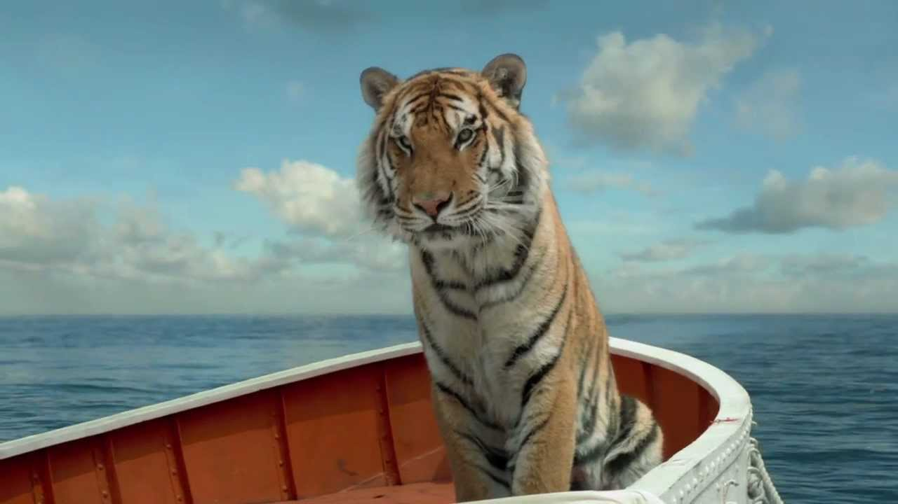
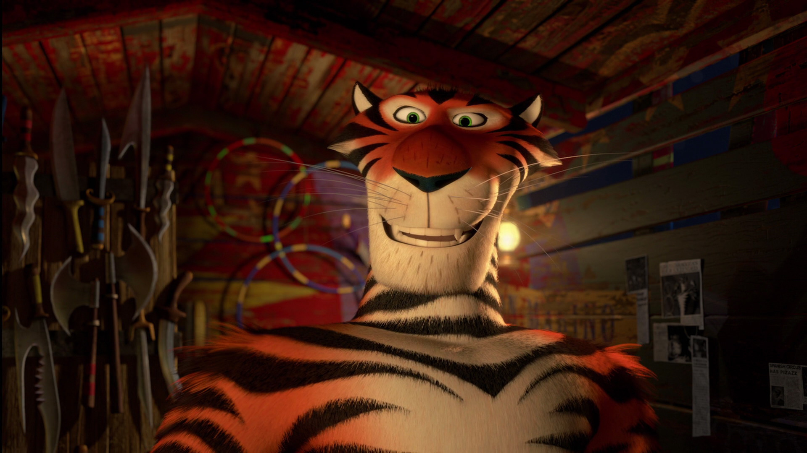
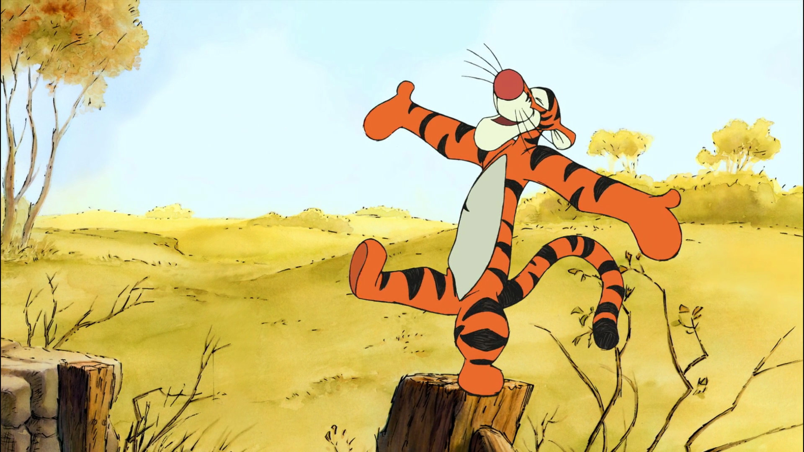
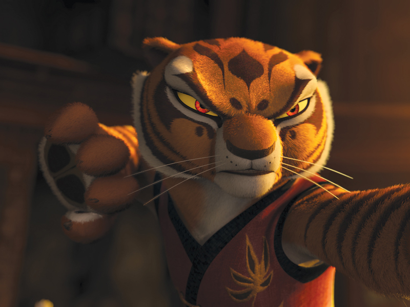
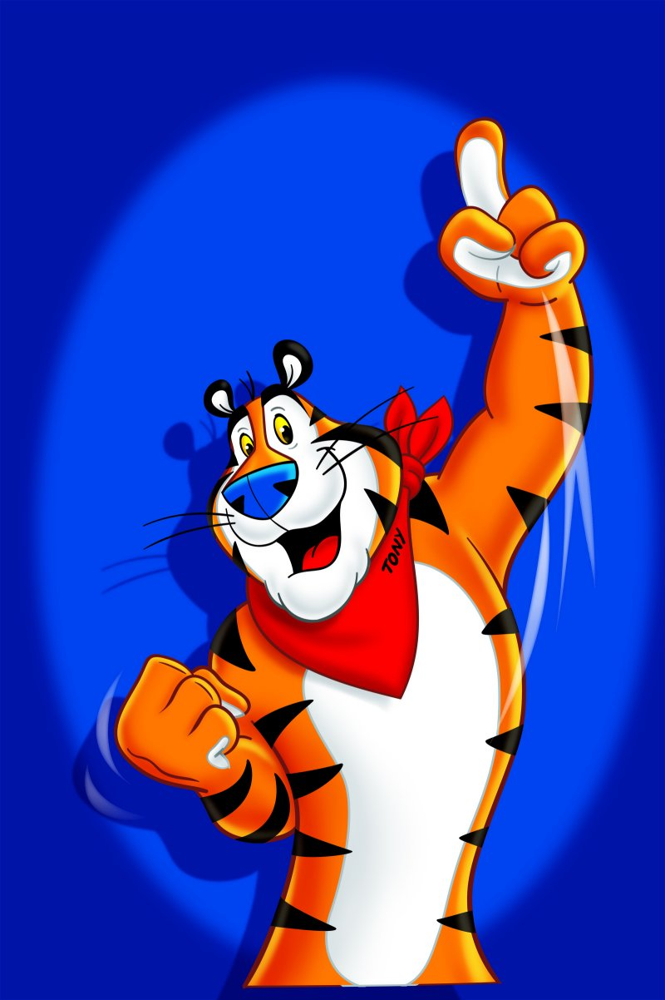

FUN FACTS
- The tiger is the biggest species of the cat family.
- Tigers can reach a length of up to 11 feet and weigh as much as 660 pounds.
- Tiger cubs leave their mother when they are around 2 years of age.
- Tigers have been known to reach speeds up to 40 mph.
- The tiger is the biggest species of the cat family.
- Tigers can easily jump over 5 metres in length.
-

Richard Parker
Life Of Pi
-

Vitaly
Madagascar 3
-

Tigger
Winnie the Pooh
-

Tigress
Kung Foo Panda
-

Tony
Kellogg's Frosted Flakes mascot
-

Spar
We Bought a Zoo
How Tigers Got Their Stripes
Many, many years ago when the world was young there was a tiger called Ben, he was plain white. One day he went to see his friends on his way he saw a bee. He ran away, terrified of the bee as quick as he could.
When Ben got home he wondered to himself “if I had black and orange stripes would all the other animals be scared of me?” That night tiger went to sleep and he dreamed of wearing black and orange stripes and he felt he was more fierce and he liked being different. But when he woke up he was still plain white .
Then he caught his breakfast of juicy zebra . After that he noticed there was a shed in the middle of the jungle. It was a bit broken but he didn’t mind he went inside and caught a mouse. Ben tried to catch it but suddenly he knocked over two paint cans! He was covered head to toe in paint. He couldn’t believe it! He shouted “I’ve got black and orange stripes!
Ben’s friends came when they heard him shouting .When he opened the door one said “RUN!” and the other one said “OK!” And they ran as quick as they could back to their house. Then Ben shouted “WAIT COME BACK! Hey are you scared of me?” “Yes!” they shouted back. “Because you’ve got stripes and only bees and wasps have stripes and they are scary!” then Ben shouted “yes! I’m scary!” he couldn’t believe it so he told all the other tigers to get stripes and that’s why from this day tigers have black and orange stripes.
source: How Tigers Got Their Stripes
SAVE THE TIGERS,
SAVE THE WORLD
Did you know...
- Poaching is the most immediate threat to wild tigers.
- Tigers have lost 93% of their historical range. Their habitat has been destroyed, degraded and fragmented by human activities.
- Rising sea levels caused by climate change threaten to wipe out forests and the last remaining habitat of the Bengal tiger population.
- As forests shrink and prey gets scarce, tigers are forced to hunt domestic livestock, which many local communities depend on for their livelihood.
for more information..